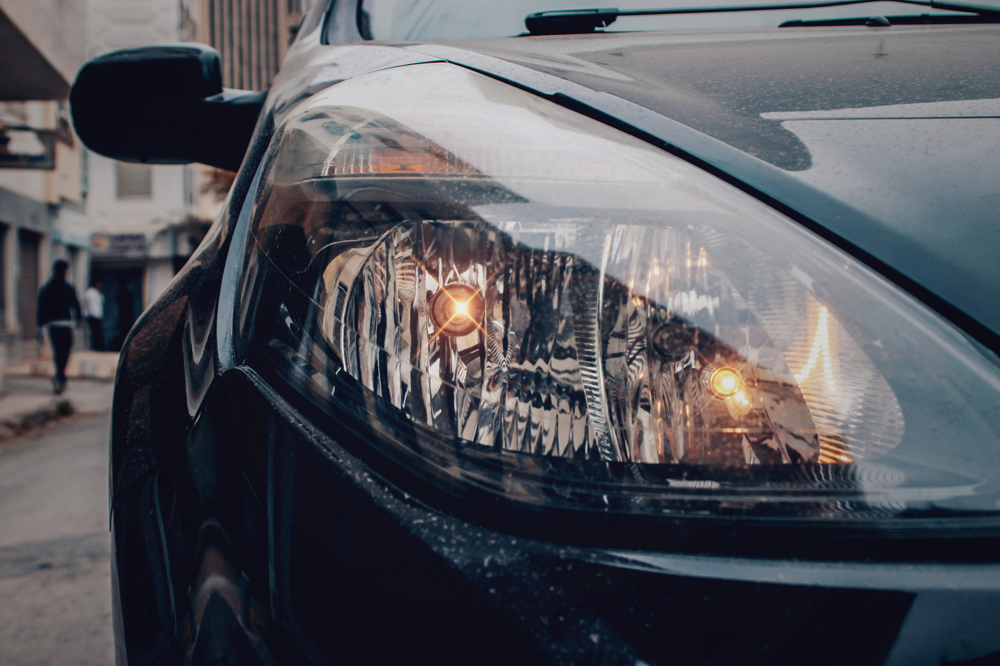
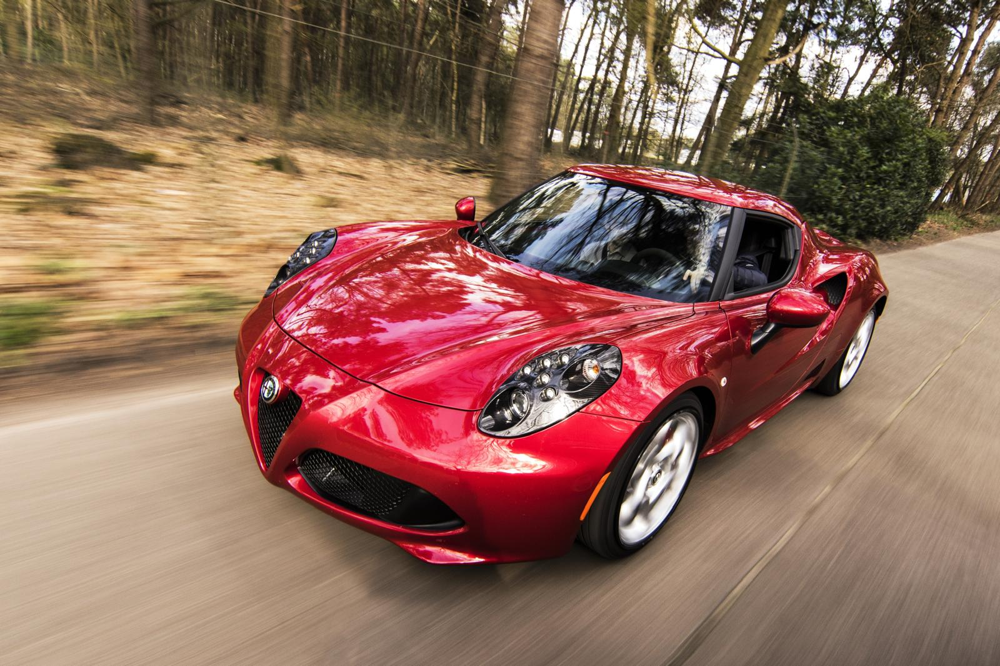

Diagnostic
Nous commençons par évaluer l'état de vos phares pour déterminer le traitement le plus approprié.
Redonnez éclat et sécurité à votre véhicule avec nos services professionnels de rénovation de phares et de lustrage de carrosserie. Chez Clean Optic, nous nous engageons à offrir des solutions de qualité supérieure pour préserver l'apparence et la performance de votre voiture. Découvrez comment nous pouvons transformer votre véhicule avec des techniques avancées et des produits de pointe.
Avec le temps, les phares de votre véhicule peuvent se ternir, jaunir ou s'oxyder, réduisant ainsi leur efficacité et votre visibilité sur la route. Clean Optic propose un service de rénovation de phares qui restaure leur transparence et améliore la luminosité.

Notre processus
Nous commençons par évaluer l'état de vos phares pour déterminer le traitement le plus approprié.
Cette étape permet d'éliminer la couche superficielle endommagée et de préparer la surface pour le polissage.
Grâce à des produits spécialisés, nous redonnons à vos phares leur clarté d'origine, éliminant les micro-rayures et l'opacité.
Pour prolonger la durée de vie de vos phares, nous appliquons une couche protectrice contre les rayons UV, évitant ainsi un jaunissement prématuré.
Ce service améliore non seulement l'esthétique de votre véhicule, mais aussi sa sécurité, en garantissant une meilleure visibilité nocturne.
Votre carrosserie mérite d'être entretenue avec soin pour conserver son éclat et sa brillance au fil du temps. Clean Optic offre un service de lustrage de carrosserie conçu pour éliminer les micro-rayures, restaurer la couleur et protéger la peinture de votre véhicule.
Notre approche
Nous nettoyons soigneusement la surface de la carrosserie pour éliminer toute saleté, poussière ou contaminants qui pourraient affecter le lustrage.
À l'aide de produits de haute qualité, nous effectuons un polissage minutieux qui redonne à votre peinture son éclat d'origine et réduit les défauts mineurs tels que les rayures superficielles.
Un second lustrage de finition est effectué pour gommer les éventuelles traces restantes.
Ce service n'améliore pas seulement l'apparence de votre véhicule, mais il contribue également à prolonger la durée de vie de la peinture et à maintenir la valeur de votre voiture.

Contactez-nous pour obtenir un devis gratuit et sans engagement.
Demander un devis gratuit